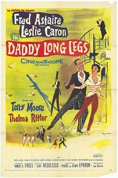

Daddy Long Legs
Starring: Fred Astaire, Leslie Caron, Thelma Ritter
Director: Jean Negulesco
Writer: Nora Ephron, Phoebe Ephron, Henry Ephron
Producer: Samuel G. Engel
Daddy Long Legs (1955) is a musical comedy film set in France, New York City, and the fictional college town of Walston, Massachusetts. The film was directed by Jean Negulesco, and stars Fred Astaire, Leslie Caron, Terry Moore, Fred Clark, and Thelma Ritter, with music and lyrics by Johnny Mercer.
Trivia
- Nominated for: Academy Award for Best Art Direction, Color; Academy Award for Best Original Musical Score.
- Based on Daddy-Long-Legs (American epistolary novel).
- 20th Century Fox bought the rights to Jean Webster's original Daddy Long Legs in 1931, releasing two versions of the film, one starring Janet Gaynor and one with Shirley Temple.
- Producer Darryl F. Zanuck envisioned a remake, this time seeking to star singer-actress Mitzi Gaynor.
- The project would not be realized until Zanuck met Fred Astaire and was inspired to make Daddy Long Legs a musical film.
Previous Showings
10 Runs • 3 Festivals
Original Billings: 2 runs (June 24, 1931 - May 22, 1955)
Original Run: June 24, 1931 (Wednesday - Saturday)
All runs on record (10):
- June 24, 1931 (Wednesday - Saturday)Janet Gaynor, Warner Baxter
- May 22, 1955 (Sunday - Saturday)Fred Astaire, Leslie Caron
- July 22, 1987w/ Silk Stockings
- December 20 - 21, 1990w/ Let's Dance
- February 9 - 10, 1993w/ Yolanda and the Thief
- January 27 - 30, 1996w/ Father Goose
- January 21 - 23, 2005w/ Silk Stockings
- August 4 - 7, 2007Summer 2007, including Films Starring Fred Astairew/ Three Coins in the Fountain
- June 18 - 20, 2011Musicalsw/ An American in Paris
- April 12 - 14, 2024Fred Astaire 2024w/ Funny Face